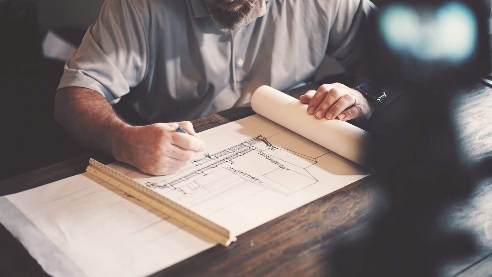
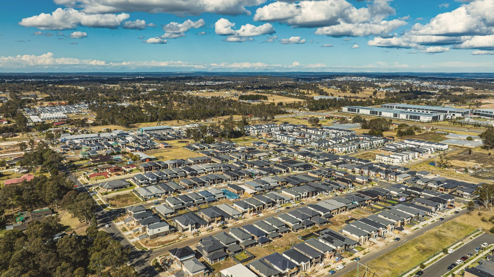

Plain-language planning for NSW sites.
Guides and definitions written for owners and developers, not for planners.

Guides to NSW planning

FeasibilityDA vs CDC: which path suits your project?
The choice between a Development Application and a Complying Development Certificate shapes your timeline, risk profile, and design flexibility. Here's how to think through the decision before you commit to either.
 Planning guides
Planning guidesWhat zoning R2 actually means for your site
R2 Low Density Residential is one of the most common zones in Sydney, and one of the most misunderstood. Here's what it permits, what it prohibits, and what your LEP says about your specific site.
 Development tips
Development tips5 things to check before buying a development site
Most development sites that fail do so because of information that was available before purchase. Here are the five checks every buyer should run before exchanging contracts.

Policy updatesHousing SEPP changes: what they mean for duplexes
The Housing SEPP has been amended multiple times since 2021. Here's a plain-language summary of where things currently stand for duplex and dual occupancy development in NSW.
 Case study
Case studyTownhouse feasibility: inner west site, 2025
A walkthrough of a real feasibility review — how we assessed a 650m² site in the inner west, what the controls allowed, what the numbers looked like, and what we recommended.
 Feasibility
FeasibilityUnderstanding FSR: floor space ratio explained
Floor Space Ratio (FSR) is the single most important number in most residential feasibilities. Here's what it means, how it's calculated, and how to use it to size a development before you engage an architect.

One email when we publish. No marketing. Unsubscribe anytime.